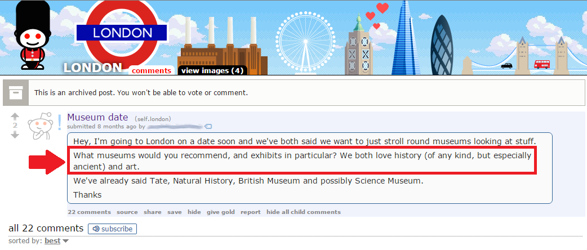
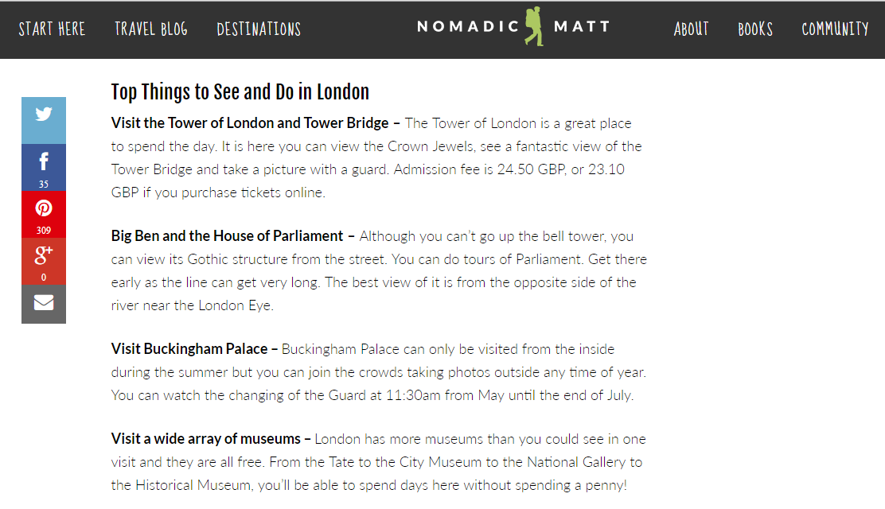
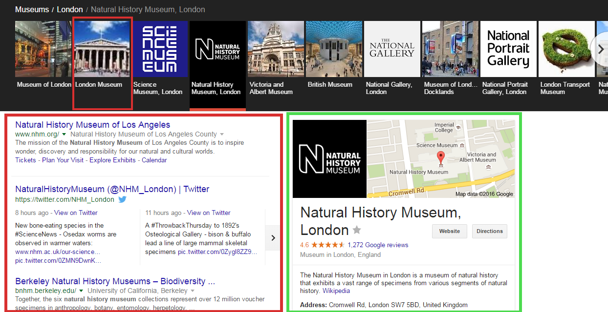
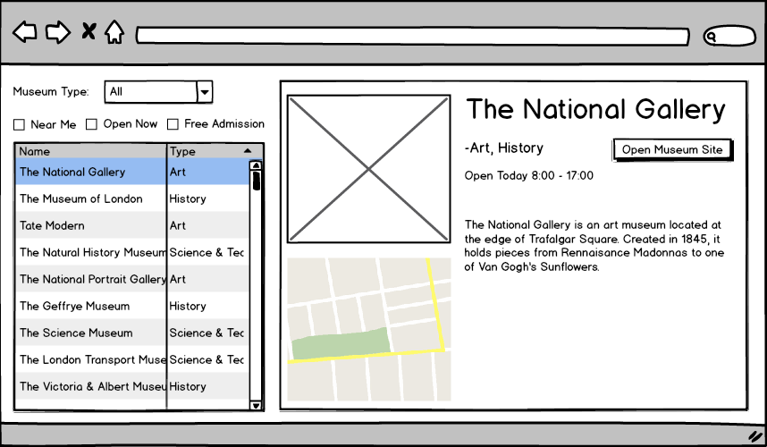
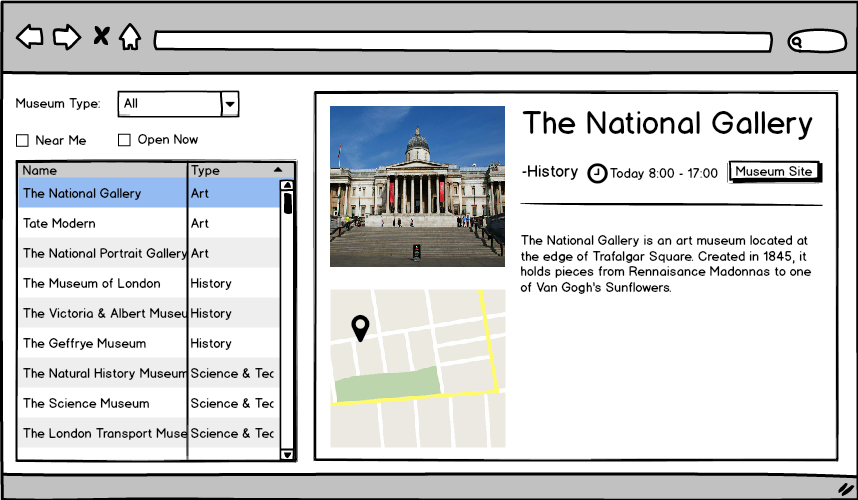
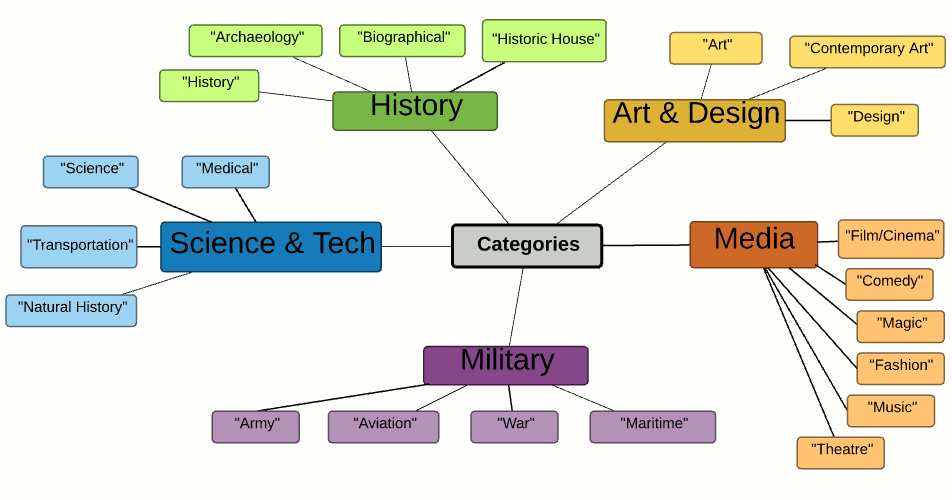
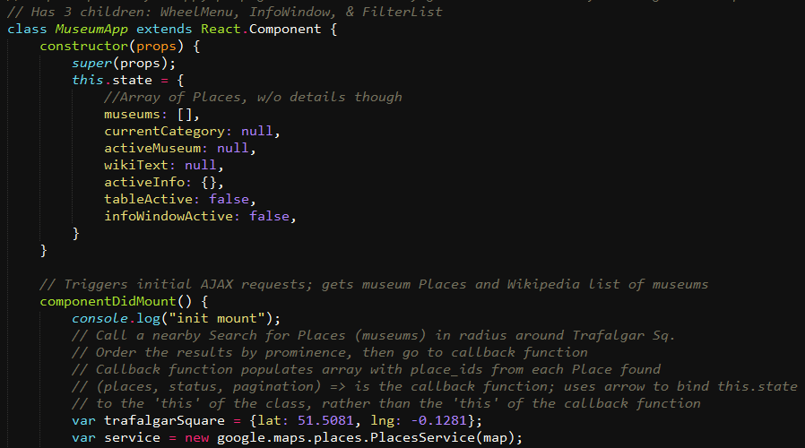
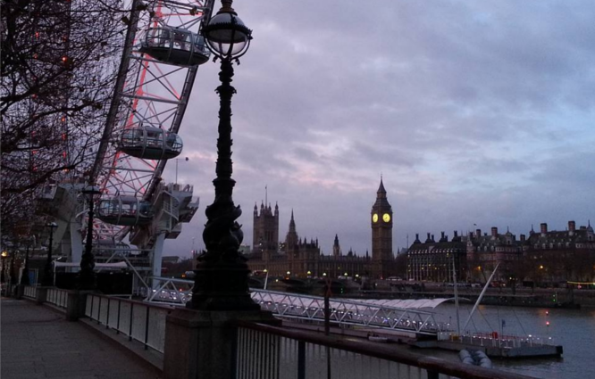

London Museum Explorer
Abstract
The London Museum Explorer is a web app designed to help showcase and navigate The Capital's plethora of world-class museums. It's also my small love letter to an incredible city, and a memento of the four months I spent there last fall.
Project Context
The London Museum Explorer is a personal project resulting from my final semester of college - I spent the end of 2015 studying in central London with a cohort of 100 other students. I took a four-month class on museum studies with a focus on London, and I was even able to apply my UX lens to dissect patrons' user journeys as part of an academic paper (see below).
-
As both a tourist and student I could experience London's finest, but without the resources of my program and professors I would've had much more difficulty navigating the over 100 museums populating the city. Thus I decided to see if I could create a platform to direct individuals to museums coinciding with their interests.
Patron Experience and
The National Portrait Gallery
Tools
Pencil & Paper |
LucidChart |
Balsamiq |
Photoshop |
React |
User Research
Because I was a one-man team and I had the luxury of being surrounded by my user groups every day, there was less need to create detailed personas than when working with large UX teams and less-accessible user cohorts. I lived next to the British Museum (the museum to end all museums) and during my stay compiled a list of groups who visited of their own accord:
- College Students (Excluding school field trips)
- Tourists (Excluding guided groups booked via agencies)
- Londoners (Professionals on break, seniors, couples, etc.)
-
My living situation afforded me constant access to conduct interviews and contextual inquiries with these three groups. I could simply walk down the street and find a friend, tourist, or Briton to ask about their reason for visiting the British Museum, and where else they planned to visit.
-
Online communities served as another, more wide-reaching resource. The London subreddit has over 50,000 subscribed members and many more individuals (myself included!) visiting to digest news, events, and dialogues surrounding the city. Visitors often post questions to get advice from locals; such posts were a valuable way to directly access users' motives and goals for experiencing the city.
User Research Conclusions
I narrowed down a set of key factors determining how individuals or groups approach museum navigation:
Time Sensitivity
Tourists are often limited in the amount of time spent in a foreign city, and can only budget time for so many attractions. Consequently visitors expressed preferences based on seeing the "best" or "top" museums, i.e. those with the most valuable or famous contents, or simply those nearby.
-
Category Preference
Some patrons vocalize preferences for particular museum types. Though most museums are implicitly historical, they also fit on a spectrum of categories beyond just 'History' or 'Art'. But as the Reddit post shows, patrons can have difficulty finding museums of their interests, or a museum tailored to someone's interests may be obscured by a more prominent museum of a similar category.
-
Spatial Familiarity
London is an immense city; it's challenging to navigate and conceptualize. Spatial familiarity constrains where in the city a patron will travel, with the most universally familiar space radiating out from the very center of the city, around Trafalgar Square.
-
Consequently I ideated on features that would address these points:
- 'Greatest Hits': Although I aimed to promote exploration, users should easily be able to find the 'top' visited museums.
- Categorization: Museums should be arranged in a loose taxonomy based on differences in content.
- Spatial Orientation: All museums should include an interactive Google Maps window, and must fall in a reasonable radius from the city center to promote accessibility.
Competitive Analysis
I considered two alternate platforms for this task: travel blogs and the Google Museum Search widget.
Nomadic Matt was a popular travel blog used by my program peers to plan itineraries:

- Advantages: First-hand experience as source, assumes a tourist's knowledge of the city, content is simple & accessible
- Disadvantages: Content is static, user has no agency to determine what content appears - blog writer is sole authority
-
Google search also includes a display to navigate between museums:

- Advantages: Content is dynamic, comprehensive, and the user has agency to explore different locations
- Disadvantages: Some content is incorrect or useless (irrelevant URLs, and the "London Museum" doesn't even exist!)
Lo-Fi Prototyping
After some initial sketching, I translated the designs into Balsamiq wireframes to start iterating on features and information architecture:
-
-
Asking friends to perform a small set of tasks (find The Sherlock Holmes Museum, see what exhibitions are on at Tate Modern) revealed that there had to be better navigation means than dropdowns and densely-packed tables. Similarly, the same initial 10 museums displayed were always the first ones that users would explore; this was creating a visual hierarchy negating the goal of exploration.
While grouping museum subcategories into searchable types, I saw a natural fit for a circular landing page menu:
-
The menu accomplished a few important things:
- Parity: No category is clearly prioritized over another in a visual context
- Onboarding: A simple message - "Explore the Capital's Museums" - provides direction and user agency; the museums they see are direct results of their category selection
- Time Buffer: Loading the page triggers API calls to fetch the museum data - taking a moment to select a category ensures all data will be ready when the museums display
Front-End Development
In UX I'm a more skilled developer than graphic designer, so personal projects skip InVision-stage hi-fi protoypes - it's easier for me to dive straight into code once I've established structure and function.
-
Facebook's React was a perfect fit to help build my site as a dynamic Single-Page Application. Its design pattern of funnel-down UI propagation meant I could run initial API calls, save the results to the top level, and change the museum displays in response to user navigation.
-
There was no established way to categorize museums, so I had to devise my own method. I found that by cross-referencing 60 Google Maps results for 'museum' around Trafalgar Square with an exhaustive Wikipedia chart, I could extract the Wikipedia subcategories into one of five general categories for search: Science & Tech, Art & Design, History, Military, and Media.
-
Many lines of JavaScript and CSS later I had a working live version! I'm partial to a little CSS razzle-dazzle, so I wrote transitions to turn the landing menu into a set of navigable tabs at the bottom - this preserves user understanding of site iconography, and switching museum categories remains a simple one-click step.
-
The Google Maps API provides museum metadata, an interactive mini-map display, and photo assets. The Wikipedia API provides a museum's category, as well as informative text pulled from its individual Wikipedia entry.
Conclusion
I'm aiming to iterate on the site and polish it up, but overall I'm quite pleased with the result! It was a great way to develop my UX skills in the context of something I really love, and I enjoyed implementing every step of the design process by myself. I have some great takeaways as well:
- Simple design is okay: My original concept was very simple in scope - help showcase and navigate London's museums. At times I felt the need to expand it into something more elaborate, but I was reminded to stick to my guns. Don't add features for features' sake!
- I need to commit eventually: I can spend hours pointing out things I would change, but the project would never move forward unless I recognized the diminishing returns of constant iteration - at some point I had to say "I need to move forward now and switch gears".
-
It's my dream to go back to London and a bigger dream to work there, but for now I'm beyond happy with the opportunity I had to live and breathe the most marvelous place I've ever experienced.
